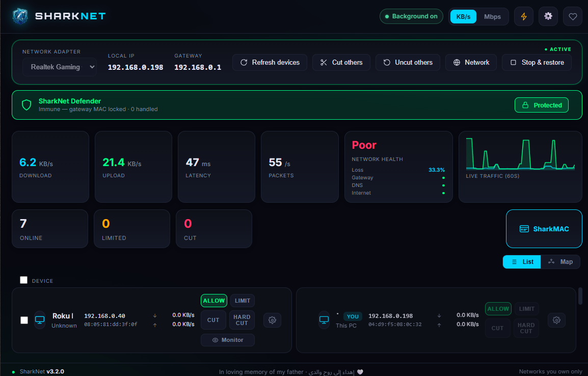

Discover every device
Scan your local network and identify connected devices using IP, MAC, vendor and best-effort device naming.
PCTVIPPSIoT
A modern Windows application for discovering devices, monitoring activity, controlling bandwidth, blocking domains and services, and protecting your local network.

SharkNet combines device discovery, bandwidth control, traffic observation, service blocking and protection in one focused Windows desktop app.
Scan your local network and identify connected devices using IP, MAC, vendor and best-effort device naming.
Set independent upload and download limits for individual devices using SharkNet's userspace limiter.
Observe domains from supported DNS, TLS SNI and HTTP signals where those signals are visible.
Block specific domains or use the built-in service catalog for common streaming, social and gaming services.
Gateway-MAC verification, ARP-spoof detection, Static ARP Lock and recovery tools help keep control safer.
Tray operation, theme-aware notifications, Dark/Light modes, five languages and read-only diagnostics.
Normal access. No enforcement; interception only occurs if monitoring requires it.
Cap upload and download bandwidth independently for a selected device.
Stop forwarding while preserving SharkNet's normal blocked-traffic observation semantics.
Maximum isolation: no forwarding, with observation suppressed according to SharkNet's design.
SharkNet uses Npcap and controlled ARP interception on IPv4 networks when a device needs monitoring or enforcement.
Read the technical overview →DiscoverFind devices on your LAN
ChooseMonitor or apply a rule
EnforceAllow, limit, cut or hard-cut
RestoreCleanly return devices to normal
NetCut and SelfishNet focus mainly on LAN client control and bandwidth. NetLimiter is powerful for traffic control on the PC where it is installed. SharkNet combines LAN-device control, monitoring, domain/service rules and ARP defense in one local-first workflow.
The differentiator is not one button. It is the combination of per-device shaping, CUT/HARD CUT isolation, visited-domain visibility, service/domain blocking, ARP protection, clean restore and a modern background desktop experience.
Free GPL-3.0 Windows utility that combines per-device bandwidth control, four enforcement modes, visited-domain visibility, domain/service blocking and built-in ARP defense.
Broadest SharkNet-style LAN workflow in this comparisonEstablished LAN-control product centered on discovering clients, cutting internet access and controlling device speed.
Official site ↗A classic Windows LAN-control utility for discovering clients, setting upload/download caps and blocking devices.
Official site ↗A mature Windows traffic-control suite for limiting, prioritizing, blocking and analyzing applications and connections on the computer where NetLimiter is installed.
Official features ↗| Capability | SharkNet | NetCut | SelfishNet | NetLimiter |
|---|---|---|---|---|
| Source / pricing model | GPL-3.0 · free · open source | Proprietary / commercial features | Public source repository | Proprietary commercial product |
| Discover devices on the LAN | Yes — IP, MAC, vendor + names | Yes | Yes | Not its primary model |
| Control other LAN devices from one PC | Yes | Yes | Yes | Primarily the local PC |
| Independent per-device download + upload limits | Built in | Speed control | Yes | Per app / connection on local PC |
| Normal access mode without enforcement | ALLOW | Standard access | Standard access | Standard access |
| Internet cut / block for a LAN device | CUT | Yes | Yes | Blocks local apps / filters |
| Maximum-isolation mode distinct from normal cut | HARD CUT | No comparable mode documented | No comparable mode documented | Different local-PC blocker model |
| Monitor a LAN device without applying a speed/cut rule | Dedicated monitoring flow | Client monitoring | Basic traffic visibility | Excellent local-app monitoring |
| Visited-domain visibility per LAN device | DNS + TLS SNI + HTTP signals | Not a core documented feature | Not documented in project feature list | Connection/domain visibility for local PC traffic |
| Block a specific domain for one LAN device | Yes | Not a core documented feature | Not documented | Domain filters for local-PC traffic |
| Built-in service presets (streaming / social / gaming) | Yes | Not documented as equivalent presets | Not documented | Custom filters rather than LAN-device service presets |
| Gateway-MAC verification + ARP-spoof detection | SharkNet Defender | Defender offered separately | No built-in defensive layer documented | Not the product focus |
| Static ARP Lock + recovery tools | Built in | Separate defense tooling | Not documented | Not applicable to its main workflow |
| Clean ARP restore when control stops | Designed into shutdown / restore flow | Restores access when control ends | ARP-spoof based control | No ARP interception required |
| No router password required | Yes | Yes | Yes | Yes |
| No SharkNet-style cloud account required for core use | No account · no SharkNet cloud backend | Account used for some membership features | No account model in the public project | Desktop licensing; remote features available |
| Local-first / no telemetry claim | Yes | Different commercial model | Not documented as a privacy guarantee | Different commercial model |
| System tray + background runtime + notifications | Built in | Desktop background operation | Basic desktop utility | Mature desktop background experience |
| Dark + Light themes | Built in | Varies by product UI | Classic UI | Customizable UI |
| Five locales including Arabic RTL | EN · AR · ES · FR · ZH-CN | Different localization set | Not documented | Different localization set |
| Advanced per-application rules on the controller PC | Not SharkNet's focus | Not the main focus | Not the main focus | NetLimiter strength: limits, priorities, blocker, filters, scheduler + quotas |
Scope matters: this matrix compares features relevant to SharkNet's LAN-device-control workflow. NetLimiter is substantially deeper for per-application shaping and rule automation on the Windows PC itself. Third-party features, licensing and plans can change; links above point to their current public documentation.
The normal setup is intentionally straightforward: installer, Npcap prerequisite, administrator permission, then choose the correct adapter.
Get the official SharkNet v3.2.0 Windows installer directly from the GitHub release.
SharkNet checks for Npcap. If it is missing, install Npcap with its default options, then continue.
Approve the Windows UAC prompt. Low-level packet I/O requires administrator privileges.
Choose the Ethernet or Wi-Fi adapter showing your real gateway, then start control and let devices populate.
Use ALLOW, LIMIT, CUT, HARD CUT or Monitor as needed. Stop & restore — or exit normally — to return devices to normal.
Use responsibly. Only manage networks you own, administer, or have explicit permission to control.
No router credentials. No dedicated hardware. SharkNet runs locally on the Windows PC managing the network.
SharkNet stores only the local state needed for features such as settings, device names and optional saved rules. Visited-site history is session-only and is not persisted by the current application.
Read the privacy policy →No fake five-star score. SharkNet is a focused Windows LAN utility with a distinctive mix of control, visibility and self-defense, but it deliberately does not try to be a cloud dashboard, router appliance or full enterprise policy system.
Its value is the combination: four enforcement modes, monitoring, service/domain blocking, Defender, background operation and no required SharkNet account or cloud backend.
SharkNet is free and open source. Sponsorship is optional and helps support development, testing, documentation, maintenance and future releases. There are no paid or sponsor-only features.
First public open-source release for Windows 10 and 11.
bfc40eb7386e866e247daf059ee4b4ff02e05031e8c9ff52808e8a4ca3c697d4Yes. SharkNet is free and open source under GPL-3.0.
No. SharkNet operates from a Windows PC on the local network and does not require router login credentials.
Npcap packet I/O and low-level network operations require elevated Windows privileges.
No. SharkNet does not decrypt TLS.
CUT blocks forwarding while preserving normal CUT observation behavior. HARD CUT provides maximum isolation and suppresses observation according to SharkNet's implementation.
Yes. You can optionally sponsor the project through GitHub Sponsors. Sponsorship does not unlock paid features.